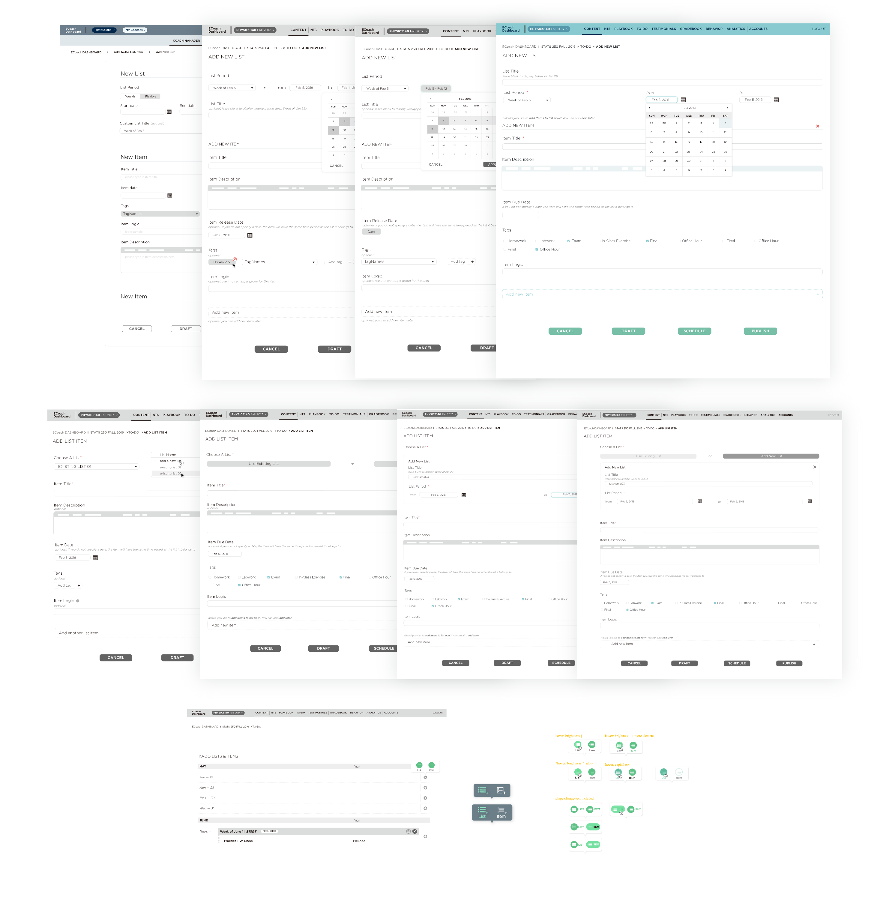

ECoach
I am here to help you with better learning experience.
Introduction
ECoach is an online web-based tailored platform, designed to help univerity students in large courses to receive personalized tutoring helps and help them success in the course. My main work was to contribute to its updating into a more user-friendly version for both instructor and student sides. My contributions included interface design, some of the front-end codings, and illsutration design. I worked with my mentor, research and development team to build the product together.
Type
Web UX Design + Redesign
Timeline
Apr 2018 - Now
My Role
Ideation, prototyping, wireframing, quick user testing, illustration design, visual elements design
Mentor
Kristen Miller
Overview
An overview of my design kit 😊
Design Case 1: Student Analytics
In this design case, I was assigned a task about creating a new "analytics" page for student side, allowing students to have an overview of their performance and usage of ECoach in every Coach. The main point was to show a summary of important usage and performance data in brief and simple way.
//designed output: interface prototype 👉
Understand Problem
Before the redesign, students could view if they completed certain types of products in a section below student profile, but the information was a little limited and could be confusing to have it shown in the same page with user profile.
// original interface mockup: completion status section 👉
Therefore, the goal of my task was to make sure students could have a clear idea and review of anaytics including their current and past items for a specific Coach in a new "Analytics" (well, actually we haven't decided the final name, so let's use its function instead here).
Brainstorming
At the very beginning, we focused more on having completion status shown in a clearer way. In this phase, I looked into other similar products like Coursera, Canvas to get inspirations.
Iterations
As getting more information from research team later, we got clearer idea about what to present in this page and what would be the more important thing to show in hierarchy. I went through several rounds of ideations and iterations with my mentor for features included and the way to present them.
Thus, the design works as shown below "converted" gradually into that closer to the final decision and a huge change in layout structure was happening.

Design Outcomes
In final design, the "Analytics" page included 4 parts of overview: History, Message, To-Do, and Exam. These are the most important features students would use frequently and might be closely related to their grades. Let's get an anatomy of the final design decision.
Wrap-up & More
What this page shows is inside a single Coach. Another version is currently undergoing designing, which is a "Analytics" based on all Coaches a student takes inside an institution and from a higher-level view of usage data and info.
Design Case 2: To-Do Manager (Instructor Side)
This design case was about redesigning a current existing feature for instructor side to make it more consistent with new design and usable. In a page called "To-Do Manager", instructor could choose to add a new to-do list (adding new items to it is optional) or simply add a new to-do item (to an existing list or users could create a new list inside).
//redesigned output: interface prototype 👉
Understand Problem
To understand what to improve, I chose to spend some time in exploring original To-Do Manager page and taskflow and identifying problems. The issues were more lying in needs of a slight modification in hierarchy sequence, a better way of grouping information, and style updating. As "Add New Item" and "Add New List" could happen together, there was a consideration of providing access to the other feature when user worked on one.
Original webpage wireframe

Brainstorming
In brainstorming phase, I explored examples of form design and looked into them for inspirations, while keeping the problems in mind to compare different set of ideations. Having these as drafts, I discussed with mentors and peers to seek for more feedbacks and move forward to the iteration phase.

Iteration
During iteration phase, we kept on updating based on wireframes, including how to arrange items in a line well without too empty feeling, how to provide more efficient instructions for users to smooth the form filling process, etc.
In this redesign, we decided to make it more friendly for users to fit into more flexible managing. Therefore, "Add New List" and "Add New List Item" were designed to be separated and should be accessible from "To-Do" page. And thus, I also iterated about the button styles of these 2 categories.
Final Outputs
As final design, both "Add New List" and "Add New List Item" features with form filling process were in consistency with other forms used in new design style. Questions inside the form were modified a little based on users' needs and the importance hierarchy.
Wrap-up
In this design task which had an emphasis on designing an efficient form, I learned and got a lot from it and got deeper understanding about how details could influence a lot, even it was a form that almost everyone were familiar about.
What was challenging as well was about how to made proper layouts to promote the task under existing guideline.
Design Case 3: Email Templates
Previously, emails sent to students are in plain text. To better attract students attention and keep more user stickerness, email template design is in need. After determining the genral layout and format, more of my focus were on illustration design to both show branding styles and topic of certain templates.
the very first ideation sketches
Let's have a quick look of what the final outputs are! 🤗
Takeaways
What are shown here is a condensed part of showing what my main tasks were in the AI office. It is my first internship (and I continue as student fellow till now) after I had my degree in user experience research and design, and offered me a lot of learning opportunities and continuing challenges which allowed me to combine what I learned in class and what I learned from practice together well.
All people here are super nice and always passion about their works, that influenced me a lot about exploring my career goal and what kind of person I wanna be in the future. I am not hundred percent sure if I will be a designer for life-time. But I believe that I can always be passion about work and life.
👈 Thanks for scrolling 👉